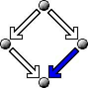

Join the mailing list
of interested parties.
For any further questions contact aca@risc.uni-linz.ac.at
Maintained by
R. Filippo Salamone
(rsalamon@risc.uni-linz.ac.at
)



Sponsors U.S. Air Force European Office of Aerospace Reseach and Development Austrian Ministery for Economical Affairs Government of Upper Austria Macsyma Inc. MathSolutions Inc.
General Chairs
Bruno Buchberger (Austria),
Stanly Steinberg (USA)
Program Committee Chair
Hoon Hong
(Austria)
Program Committee
| Akira Aiba (Japan) | Erich Barke (Germany) | Alexei Bocharov (USA) |
| Victor Edneral (Russia) | Victor .G. Ganzha (Germany) | Vladimir P. Gerdt (Russia) |
| Hoon Hong (Austria) | Michael Johnson (Australia) | Richard Liska (Czech Republic) |
| Claudio Maccone (Italy) | Rolf Mertig (Netherlands) | Eugenio Roanes-Lozano (Spain) |
| Shojiro Sakata (Japan) | J. Rafael Sendra (Spain) | Ralf Sommer (Germany) |
| Sabine Stifter (Austria) | Nikolay Vasiliev (Russia) | E.V. Vorozhtsov (Russia) |
| Dongming Wang (France) | Michael Wester (USA) |
Registration,
Travelling and
Accomodation.
Join the mailing list
of interested parties.
For any further questions contact aca@risc.uni-linz.ac.at
Maintained by
R. Filippo Salamone
(rsalamon@risc.uni-linz.ac.at
)